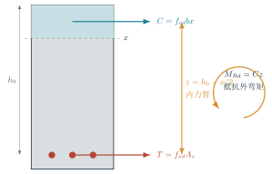

案例：把一根钢筋混凝土梁真正配出来
钢筋混凝土梁抗弯设计 已知设计弯矩是 115\ \mathrm{kN\cdot m}，到底先求什么？如果计算需要 829\ \mathrm{mm^2} 钢筋，实际选了 3\Phi20，前面算过的受压区还能原样照抄吗？
这道题容易被写成一串步骤：求 x，求 A_s，选钢筋，验算。学生照着做，也可能每一步都对；把例题稍微换一个问法，整条路又断了。问题不在公式太多，而在截面里的那两股力还没有真正立起来。
这一页保留讲解稿最好的地方：先看混凝土和钢筋怎样分工，再说明为什么选这个式子；同时把实际配筋后的复核补完整。正文、可打印文档和调参实验讲的是同一件事，各自做自己擅长的部分。
先看截面里谁在干活
混凝土承担上部压力，钢筋承担下部拉力。两股力大小相等、方向相反，又隔着一段距离，于是形成抵抗外弯矩的内力偶。

在这套教学模型中，x 指等效矩形压应力块深度：
C=f_{cd}bx,\qquad T=f_{sd}A_s,\qquad C=T.
压力和拉力之间的距离是
z=h_0-\frac{x}{2},
所以抵抗弯矩为
M_{Rd}=f_{cd}bx\left(h_0-\frac{x}{2}\right).
这幅图先回答“力从哪里来”；公式只是把图里的平衡写下来。
为什么先求 x
现在有两个未知量：x 和 A_s。力平衡式里两个都在，弯矩式里却只有 x。所以先解弯矩式，不是因为课本规定了顺序，而是因为它是眼前未知量最少的关系。
| 能写下的关系 | 里面还剩几个未知量 | 现在适不适合先解 |
|---|---|---|
| f_{cd}bx=f_{sd}A_s | 2 | 先留着 |
| M_{Ed}=f_{cd}bx(h_0-x/2) | 1 | 从这里开始 |
| A_s=n\pi\phi^2/4 | 根数、直径尚未选 | 后面把连续需求变成真实钢筋 |
这是一种很朴素、也很普遍的办法：问题很乱时，先找已知量最多、未知量最少的那种描述。解电路、查故障、排施工步骤，也常从这里打开缺口。
从需要的面积走到买得到的钢筋
本例采用 b=250\ \mathrm{mm}、h=500\ \mathrm{mm}、a_s=40\ \mathrm{mm}，所以 h_0=460\ \mathrm{mm}。把 115\ \mathrm{kN\cdot m} 换成 115\times10^6\ \mathrm{N\cdot mm}，得到
x_{\mathrm{req}}\approx79.30\ \mathrm{mm},\qquad A_{s,\mathrm{req}}\approx829.0\ \mathrm{mm^2}.
829.0\ \mathrm{mm^2} 是连续的计算需求，实际却只能从一组根数和直径中选。若选 3\Phi20：
A_{s,\mathrm{prov}} =3\times\frac{\pi20^2}{4} =942.48\ \mathrm{mm^2}.
此时最容易犯的错，是拿实际钢筋面积 942.48 去配原来的 x=79.30。这两者不是同一个平衡状态。钢筋拉力变了，混凝土压力也得跟着变：
x_{\mathrm{prov}} =\frac{f_{sd}A_{s,\mathrm{prov}}}{f_{cd}b} \approx90.15\ \mathrm{mm},
M_{Rd} =f_{cd}b x_{\mathrm{prov}}\left(h_0-\frac{x_{\mathrm{prov}}}{2}\right) \approx129.05\ \mathrm{kN\cdot m}.
在本例假定下，M_{Rd}/M_{Ed}\approx1.122。这里把它叫作离散选筋带来的承载力余量，不另外叫“安全系数”。可靠度并不藏在这一个比值里。
现在亲手改一个量
先猜为什么要先求受压区，再改梁高、弯矩和钢筋。选完真实钢筋后，留意受压区是否重新计算；也可以保存两个方案，比较“梁加高”与“多放钢筋”谁更有杠杆。全屏打开实验。
a_s 不是保护层
a_s 是受拉钢筋重心到受拉边缘的距离。若保护层至箍筋外缘为 c，单层主筋可以先按
a_s=c+\phi_{\mathrm{st}}+\frac{\phi_l}{2}
估算。网页实验把“按讲稿固定 a_s=40\ \mathrm{mm}”与“由构造推导有效高度”分成两个模式，就是为了不把保护层、箍筋和主筋半径揉成一个含糊的数。
公式没有替我们回答的事
这一页只处理矩形截面单筋抗弯教学模型。它没有完成抗剪、裂缝、挠度、锚固和耐久性检查，也没有替项目选择现行规范、荷载组合与材料设计值。若所需或实际相对受压区深度超过本例给定的 \xi_b，意思是当前模型不再适用；不能把 x 强行截到界限值，就宣布问题解决。
在网页里翻看标准 PDF
最后带走的不是“第几步套哪个式子”，而是两件事：先找最容易解开的基本关系；连续的计算需求一旦换成离散的真实方案，就回到平衡关系重新算一遍。换钢筋如此，换螺栓、换标准板厚、换设备型号，也一样。